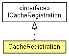

org.eclipse.net4j.util.cache
Class CacheRegistration
java.lang.Object
 org.eclipse.net4j.util.cache.CacheRegistration
org.eclipse.net4j.util.cache.CacheRegistration
- All Implemented Interfaces:
- ICacheProbe, ICacheRegistration
- public class CacheRegistration
- extends Object
- implements ICacheRegistration

| Methods inherited from class java.lang.Object |
clone, equals, finalize, getClass, hashCode, notify, notifyAll, toString, wait, wait, wait |
DEFAULT_RECONSTRUCTION_COST_DECAY_FACTOR
public static final float DEFAULT_RECONSTRUCTION_COST_DECAY_FACTOR
- See Also:
- Constant Field Values
CacheRegistration
public CacheRegistration(ICacheMonitor cacheMonitor,
ICache cache)
dispose
public void dispose()
- Specified by:
dispose in interface ICacheRegistration
isDisposed
public boolean isDisposed()
- Specified by:
isDisposed in interface ICacheProbe
getCacheMonitor
public ICacheMonitor getCacheMonitor()
- Specified by:
getCacheMonitor in interface ICacheRegistration
getCache
public ICache getCache()
- Specified by:
getCache in interface ICacheRegistration
getElementCount
public int getElementCount()
- Specified by:
getElementCount in interface ICacheProbe
getCacheSize
public long getCacheSize()
- Specified by:
getCacheSize in interface ICacheProbe
getAverageElementSize
public long getAverageElementSize()
- Specified by:
getAverageElementSize in interface ICacheProbe
getReconstructionCost
public long getReconstructionCost()
- Specified by:
getReconstructionCost in interface ICacheProbe
elementCached
public void elementCached(int elementSize)
- Specified by:
elementCached in interface ICacheProbe
elementEvicted
public void elementEvicted(int elementSize)
- Specified by:
elementEvicted in interface ICacheProbe
elementReconstructed
public void elementReconstructed(long reconstructionTime)
- Specified by:
elementReconstructed in interface ICacheProbe
getReconstructionCostDecayFactor
protected float getReconstructionCostDecayFactor()
Copyright (c) 2004 - 2011 Eike Stepper (Berlin, Germany) and others.